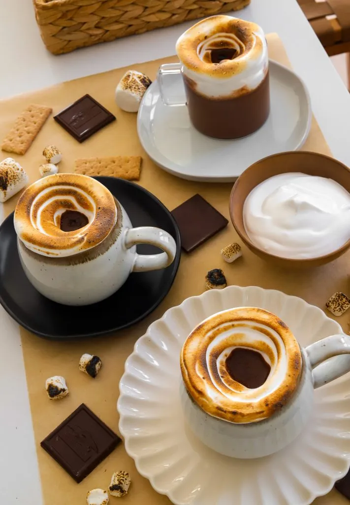
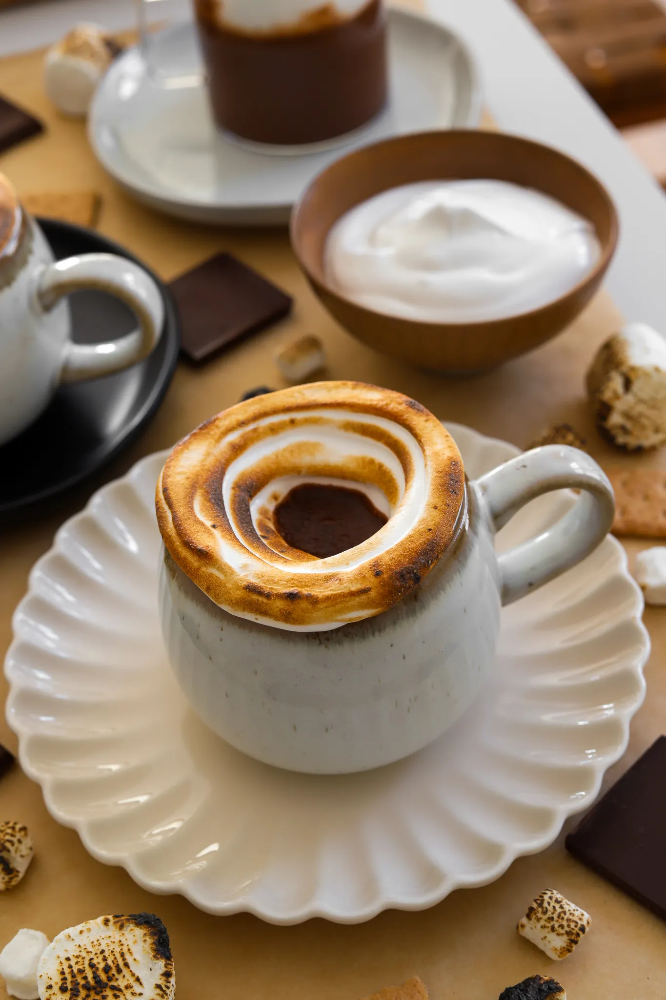

Prep Time: 10 minutes Cook Time: 20 minutes
Total Time: 30 minutes Yields: 4
There’s nothing like a warm cup of hot cocoa to cozy up to but when you add a creamy, toasted marshmallow topping, it becomes next-level indulgent. Think rich, velvety hot cocoa paired with a golden, fluffy cloud that has just the right amount of sweetness and a hint of campfire nostalgia. Whether you’re treating yourself on a chilly day or serving it up for a special occasion, this recipe is sure to impress every time.
Jump To RecipeThere’s nothing like a warm cup of hot cocoa to cozy up to but when you add a creamy, toasted marshmallow topping, it becomes next-level indulgent. Think rich, velvety hot cocoa paired with a golden, fluffy cloud that has just the right amount of sweetness and a hint of campfire nostalgia. Whether you’re treating yourself on a chilly day or serving it up for a special occasion, this recipe is sure to impress every time.
To start, you’ll need a mix of whole or 2% milk, heavy cream, and evaporated milk to create the perfect creamy base. This combination gives the hot cocoa a rich, luxurious texture that feels like a hug in a mug. Heat the mixture gently in a saucepan, being careful not to let it boil. Stir in cocoa powder and sugar, whisking until the cocoa dissolves completely and the mixture is smooth. You can also just use white sugar but I prefer brown sugar for the extra depth of flavor. Adding a few pieces of high-quality chocolate can take the richness to the next level, creating a silky, almost decadent cocoa. It also thickens up the hot cocoa like the Parisian hot cocoa that took social media by storm. There’s nothing worse than watery hot cocoa. And finally, a pinch of salt is a small but important addition to enhance the flavors, and a splash of vanilla extract at the end gives the drink a warm, fragrant finish.
If you’re feeling adventurous, try infusing your milk mixture with whole spices like cinnamon sticks, cloves, or even a split vanilla bean for a subtle yet aromatic twist. Simply add the spices at the beginning and strain them out before serving.The marshmallow topping is what makes this drink truly special. Start by adding egg whites and a pinch of cream of tartar to a bowl. Use a mixer to beat the egg whites until they’re bubbly, foamy, and just starting to hold soft peaks. This step helps stabilize the mixture and sets the stage for the sugar syrup.
In a saucepan, combine water, sugar, and corn syrup. Heat over medium heat, stirring occasionally to dissolve the sugar. Once the sugar is fully dissolved, stop stirring to prevent crystallization, and let the mixture simmer until it reaches around 240°F. If you don’t have a candy thermometer, you can test it by dropping a little syrup into a glass of cold water; it should form a soft, pliable ball when ready.
With your mixer running on medium speed, carefully and slowly stream the hot syrup into the whipped egg whites. It’s important to pour the syrup in a steady, thin stream to avoid scrambling the eggs. Once all the syrup is added, increase the speed and whip until the marshmallow is glossy, thick, and holds stiff peaks. The result should be a fluffy, spreadable topping that’s perfect for piping.
If you’d like to get creative, you can flavor the marshmallow with a splash of peppermint for a hot cocoa variation. You could also flavor the hot cocoa with peppermint instead and leave the marshmallow topping as is.
Once your hot cocoa is ready and poured into mugs, it’s time to decorate! Transfer the marshmallow topping into a piping bag fitted with a decorative tip, or use a plastic bag with the corner snipped off if you’re in a pinch. Pipe the marshmallow around the rim of each mug, creating swirls, peaks, or any design that speaks to you.
To toast the marshmallow, use a kitchen torch to carefully caramelize the topping until it’s golden brown with slightly crisp edges. This step adds a delightful smoky sweetness that elevates the entire drink.
For extra flair, sprinkle crushed graham crackers, chocolate shavings, or a dusting of cocoa powder over the toasted marshmallow. These little touches make it feel extra special and customizable for guests.
The hot cocoa can be made ahead of time and stored in the fridge for up to two days. Simply reheat it gently on the stovetop or in the microwave when you’re ready to serve. The marshmallow topping is best used fresh for that light and fluffy texture, but if you have leftovers, store them in an airtight container at room temperature.
Leftover marshmallow topping is incredibly versatile! Use it as a dip for fruit, graham crackers, or cookies, or spread it over brownies or cupcakes for a quick and fun dessert. If you have leftover hot cocoa, freeze it into popsicle molds for a frozen treat or use it as a base for chocolate milk.
This hot cocoa with torched marshmallow topping is more than just a drink—it’s an experience. From the rich, creamy cocoa to the golden, fluffy topping, every sip feels indulgent and comforting. Perfect for cozy nights at home, festive gatherings, or whenever you want to treat yourself to something special!
If you tried this recipe and loved it, drop by down below and let me know how you liked it with a rating and comment! Feel free to also leave a question there about this recipe and I’ll get right back to it.
To see more recipes and behind-the-scenes, follow along on Instagram and Youtube ! I’m also now on Pinterest pinning away so stop by and see what’s up.
This hot cocoa is the ultimate cozy treat, topped with a luscious swirl of marshmallow that’s toasted to golden perfection. The combination of rich, creamy cocoa and the slightly crisp, fluffy topping feels like a warm hug in a mug. It’s indulgent, fun, and perfect for any chilly day!
Prep Time: 10 minutes Cook Time: 20 minutes
Total Time: 30 minutes Yields: 4
HOT COCOA
MARSHMALLOW TOPPING
PREPARE THE HOT COCOA